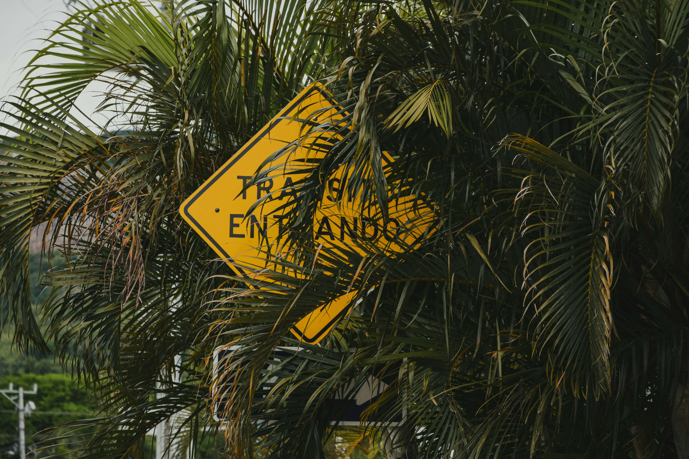

Safety in La Fortuna: Essential Tips for a Worry-Free Trip
Is it safe to visit Arenal? Yes, but here is what you need to know to stay protected.

Costa Rica is one of the safest countries in Latin America, and La Fortuna is a very welcoming town for tourists. However, like any popular destination, there are common-sense rules and specific natural hazards you should be aware of.
1. Vehicle Safety: Don't leave valuables!
The most common crime in tourist areas is petty theft from rental cars. If you are stopping at a restaurant or a viewpoint on your way to the volcano, never leave your luggage, cameras, or passports visible inside the car.
2. Nature Hazards: Volcano & Rivers
Nature is powerful in Arenal. Follow these rules to avoid accidents:
- Stay on Trails: The Arenal Volcano is dormant but still has unstable terrain and volcanic gases in restricted areas. Never cross the "Danger" signs.
- River Currents: After heavy rain, rivers can rise quickly (flash floods). If the water looks muddy and is moving fast, stay out.
- Wildlife: Never try to touch or feed animals. Snakes and spiders are part of the ecosystem; watch where you step when hiking.
3. Emergency Numbers
It's better to have them and not need them. In Costa Rica, the universal emergency number is the same as in the USA:
9-1-1
Police - Ambulance - Firefighters
Travel Insurance Recommendation
Medical costs for foreigners in private clinics can be high. We strongly recommend getting travel insurance that covers "Adventure Activities" like rafting, zip-lining, or canyoning before you arrive.